La criptozoología es la disciplina que estudia animales cuya existencia no ha sido validada por la ciencia convencional pero tampoco descartada de forma definitiva. No se trata de magia: es la investigación metódica de criaturas registradas en testimonios, huellas, muestras de ADN ambiguas, fotografías y crónicas históricas que permanecen sin resolver. Algunos de sus "criptidos" han terminado siendo descubrimientos reales: el okapi, el calamar gigante, el celacanto, el tapir andino. Otros continúan esperando.
Este bestiario recoge únicamente animales: criaturas cuya discusión pertenece al campo de la zoología, no de la mitología ni lo sobrenatural. Para las figuras míticas y los seres de la cosmología latinoamericana existe un artículo aparte. Aquí solo caben criaturas que, de existir, tendrían una explicación biológica —por extraordinaria que sea.
Las entradas están agrupadas por categoría zoológica. Cada una incluye distribución geográfica documentada, tipo de evidencia disponible, hipótesis científicas vigentes y estado actual de la investigación. Los imageholders en formato están reservados para ilustración original.
Grandes Primates y Homínidos No Catalogados
El grupo criptozoológico más documentado del mundo. Cada continente habitado tiene al menos una tradición consistente de encuentros con grandes primates o humanoides peludos desconocidos. La hipótesis más seria apunta a poblaciones relictas de homínidos fósiles o grandes antropoides aún no clasificados.
Bigfoot / Sasquatch
También: Skookum, Dzunukwa, El Hombre del Bosque
El criptido más documentado del mundo: más de 10,000 avistamientos registrados solo en Norteamérica, huellas de hasta 50 cm, muestras de cabello de origen incierto y el controvertido "film Patterson-Gimlin" de 1967 —59 segundos de 16mm filmados en Bluff Creek, California, que décadas de análisis forense no han podido descartar definitivamente—. Las tradiciones orales de los pueblos indígenas de la costa noroeste del Pacífico registran entidades similares con nombres como Dzunukwa o Skookum desde mucho antes del contacto europeo.
La hipótesis biológica más respaldada académicamente propone que podría tratarse de un descendiente del Gigantopithecus blacki, un gran simio extinto que habitó el sureste asiático hasta hace aproximadamente 300,000 años. Alternativamente, algunos investigadores postulan una especie desconocida de gran primate adaptado al bosque templado norteamericano. Ninguna de las muestras de ADN analizadas hasta la fecha ha producido un resultado que no corresponda a fauna local conocida.
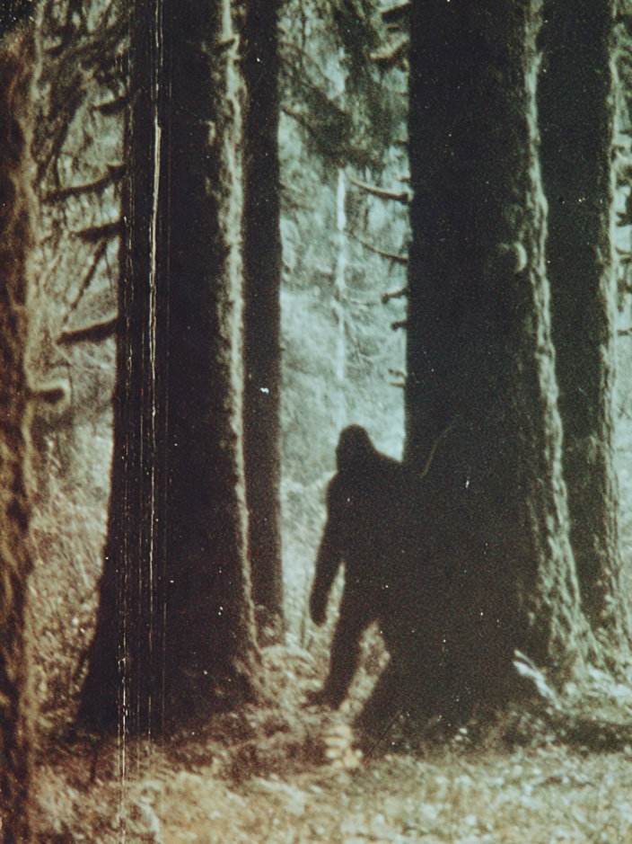
Bigfoot / Sasquatch · Arte original ·
Yeti
También: Meh-Teh, Migoi, Abominable Hombre de las Nieves
El equivalente himalayo del Bigfoot, con una diferencia cultural fundamental: en las tradiciones tibetanas y nepalesas el "Migoi" no es un misterio sino una certeza cultural, un ser de estatus cuasi-sagrado ligado a la alta montaña. Los avistamientos modernos formales comienzan con expediciones europeas de los años 1920–1950, y las huellas documentadas en nieve —de gran tamaño y disposición bípeda clara— son el eje de la discusión científica.
En 2017 el equipo del Prof. Neil Gemmell (Universidad de Otago) publicó el análisis de ADN de nueve muestras atribuidas al Yeti. La mayoría correspondieron inequívocamente a osos del Himalaya (Ursus arctos isabellinus). Sin embargo, una muestra de pelo permaneció sin identificación plena en la publicación original. La hipótesis del oso caminando en dos patas —que superpone huellas traseras sobre las delanteras creando impresiones mayores— explica muchos casos, pero no todos los descritos en detalle por testigos experimentados en el terreno.
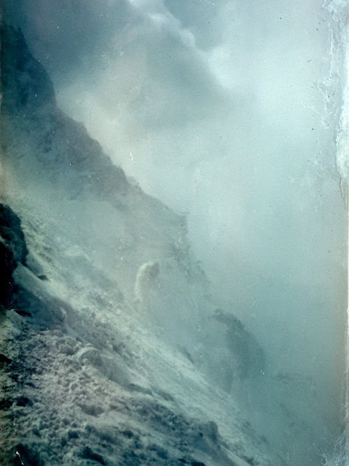
Yeti · Arte original ·
El Sisimite / Itacayo
También: Sisisimiq, El Gigante del Monte, Ih K'in (maya)
Reportado de forma consistente en las selvas altas de Honduras, Guatemala y Nicaragua, el Sisimite es descrito como un humanoide gigante y peludo de entre 2 y 2.5 metros, extraordinariamente fuerte, con un rasgo anatómico recurrente en los testimonios: los pies colocados al revés —los dedos apuntando hacia atrás— para despistar a los rastreadores que intentan seguir sus huellas. Esta característica, presente en tradiciones orales de culturas que no tuvieron contacto entre sí, es uno de los detalles más desconcertantes del corpus de avistamientos.
A diferencia del Bigfoot norteamericano, el Sisimite es universalmente descrito como agresivo: los relatos incluyen raptos de personas —preferentemente mujeres, en la versión hondureña— y ataques a aldeas en zonas remotas de la selva alta. Los registros coloniales españoles de los siglos XVI y XVII mencionan encuentros similares recogidos de informantes indígenas, lo que da al criptido una profundidad histórica considerable. La hipótesis más plausible, aunque sin evidencia, sería una especie de gran primate no catalogado adaptado a los bosques nubosos de América Central.
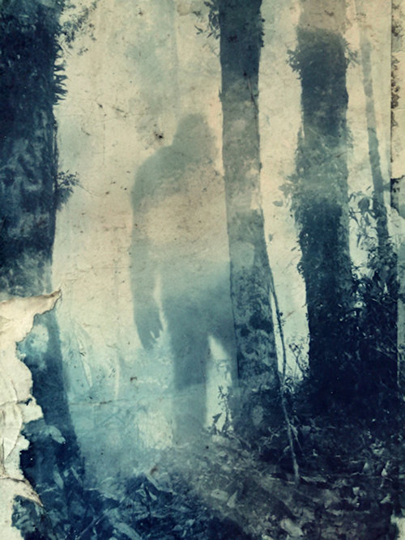
Sisimite · Honduras / Guatemala · Arte original ·
El Sinsimio
También: El Mono del Sur, Simio de las Sierras
Reportado en las zonas selváticas del sur de México —Chiapas, Oaxaca y la Península de Yucatán—, el Sinsimio se distingue del Sisimite en un aspecto clave: no es descrito como humanoide sino como un gran simio, morfológicamente más cercano a un gran antropoide africano que a un homínido bípedo. Los testigos reportan un animal que se desplaza preferentemente en cuadrupedia pero que puede erguirse, con proporciones corporales similares a un chimpancé pero de mayor tamaño, y una vocalización descrita como "un aullido grave que hace vibrar el pecho".
México no tiene grandes primates autóctonos en su fauna moderna —los monos aulladores (Alouatta palliata) y los saraguatos de Yucatán (Alouatta pigra) son las especies más grandes, y ninguna supera el metro de longitud—. Si los avistamientos son reales, implicaría una especie completamente desconocida para la primatología o una población feral de gran primate no nativo que habría escapado durante siglos al registro científico, lo cual es extraordinariamente improbable pero no imposible en las zonas más remotas del macizo chiapaneco.
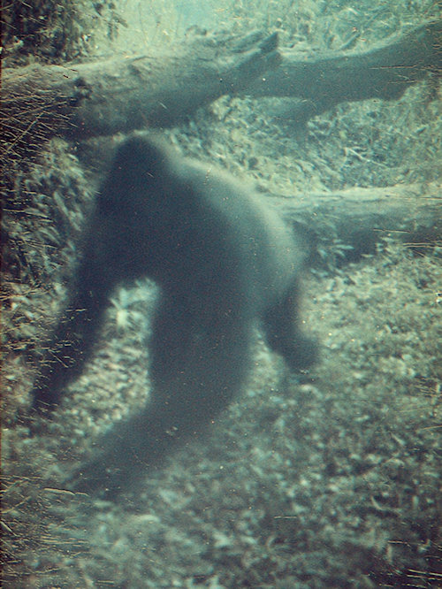
El Sinsimio · Sur de México · Arte original ·
Mono Grande / El Ucumar
También: Ukumar-zupai, Ukuku, El Hombre Oso
En las yungas y selvas andinas de Argentina, Bolivia y Perú, los registros de avistamientos de un humanoide robusto y velludo se acumulan con una densidad comparable a los del Bigfoot norteamericano. El "Ucumar" o "Ukumar-zupai" es descrito como un ser bípedo, de entre 1.5 y 2 metros, cubierto de pelo oscuro, que habita las zonas de transición entre el bosque nuboso andino y la selva baja. En algunas comunidades andinas se le considera un ser capaz de hibridar con humanos —lo que sugiere una proximidad zoológica percibida—.
La hipótesis más interesante científicamente la propuso el zoólogo Emérito argentino Marcos Medina Ripoll: que los avistamientos podrían corresponder a osos de anteojos (Tremarctos ornatus) de gran talla, que ocasionalmente se desplazan en posición erguida. Sin embargo, la descripción consistente de locomoción bípeda habitual y de dedos prensiles en pies y manos excede la anatomía del oso de anteojos. No se ha descartado la hipótesis de un primate desconocido de hábitos semifósiles.
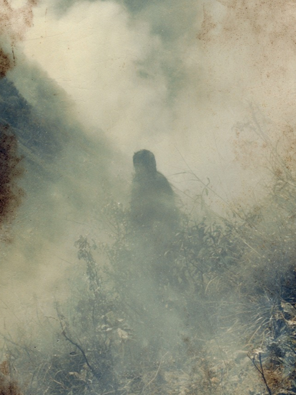
Mono Grande / Ucumar · Andes · Arte original ·
Los Monos de Loys
También: Ameranthropoides loysi, El Simio de la Frontera
En 1920, el geólogo suizo François de Loys afirmó haber encontrado y matado a dos grandes primates bípedos en la selva de la frontera entre Colombia y Venezuela, en la cuenca del río Tarra. La única fotografía que documentó el hallazgo muestra un animal sentado sobre una caja, erguido, sin cola visible, con una envergadura y proporciones inusuales para cualquier primate conocido de Sudamérica. Cuando fue presentada al zoólogo George Montandon en 1929, éste la describió como una nueva especie: Ameranthropoides loysi.
La ciencia oficial rechazó la clasificación casi de inmediato: la imagen fue analizada por varios zoólogos que concluyeron que se trataba de un mono araña (Ateles belzebuth) al que se le había cortado la cola y se había posicionado artificialmente para exagerar su tamaño, usando la caja de petróleo como referencia engañosa. Sin embargo, hay detalles en la fotografía —la constitución del cráneo, la posición de las orejas, la anchura del pecho— que algunos primatólogos consideran inconsistentes con el mono araña conocido. El caso sigue sin cierre definitivo: fraude probable, pero no matemáticamente imposible.
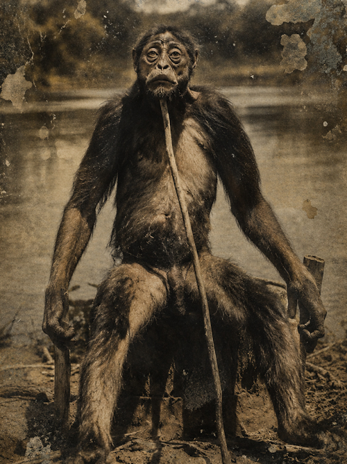
Ameranthropoides loysi · Colombia/Venezuela · Arte original ·
Megafauna Relicta: Supervivientes del Pleistoceno
La extinción de la megafauna del Pleistoceno fue gradual y desigual. En zonas remotas —fiordos patagónicos, selvas amazónicas sin caminos, cuevas de Yucatán— algunos investigadores plantean que ciertas especies podrían haber sobrevivido en poblaciones residuales. No es una hipótesis absurda: el celacanto se creyó extinto 65 millones de años y fue redescubierto en 1938.
El Mapinguari
También: Isnachi, Juma, Mapinguary
El criptido sudamericano más estudiado académicamente. Descrito por comunidades indígenas de Brasil, Perú y Bolivia como un animal bípedo enorme —entre 2 y 3 metros erguido—, de piel prácticamente impenetrable, garras curvas enormes y un olor putrefacto que paraliza a quienes se acercan, el Mapinguari encaja de forma notable con la descripción de un perezoso terrestre gigante del género Megatherium o Nothrotheriops: animales de hasta 6 metros que existieron en América del Sur hasta hace entre 8,000 y 10,000 años.
El paleontólogo Paul Martin y el ornitólogo David Oren (Museu Paraense Emílio Goeldi) publicaron en 1993 la hipótesis formal de que el Mapinguari podría ser un perezoso terrestre gigante superviviente en los bosques más inaccesibles de la Amazonia occidental. La evidencia clave que la sostiene: la "piel impenetrable" coincide con los osteodermos (huesos dérmicos) que sí tenían los perezosos gigantes; los rastros descritos incluyen huellas de garras de tres dedos curvas, exactas a las de los fósiles conocidos; y varias culturas amazónicas separadas por cientos de kilómetros describen la misma criatura con detalles anatómicos consistentes.
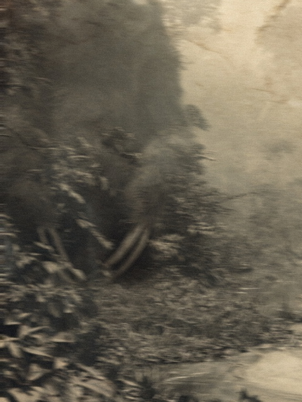
Mapinguari · Amazonia · Arte original ·
La Vaca de las Cavernas
También: Tauloma (maya), El Animal de las Cuevas
En la Península de Yucatán y el norte de Belice, las comunidades mayas de zonas rurales describen un cuadrúpedo robusto de aproximadamente 2.5 metros de longitud que habita en los sistemas de cenotes y cuevas calcáreas. A diferencia de los perezosos gigantes bípedos, la "Vaca de las Cavernas" es descrita como cuadrúpeda, de garras largas y fuertes usadas para excavar y trepar por las paredes de las cuevas, piel gruesa de color grisáceo y extremidades robustas desproporcionadas respecto a su cuerpo.
La hipótesis criptozoológica apunta a un superviviente de los perezosos cavernícolas (Megalocnus o géneros relacionados) que habitaron el Caribe y Mesoamérica hasta finales del Pleistoceno. Los sistemas de cuevas del norte de Yucatán —algunos de los más extensos del mundo, en parte aún sin explorar— proporcionarían el refugio ideal para una especie que hubiera evitado la caza humana escondiéndose bajo tierra. No existe evidencia física moderna, pero los fósiles de perezosos cavernícolas son abundantes en exactamente las mismas cuevas donde se sitúan los avistamientos.
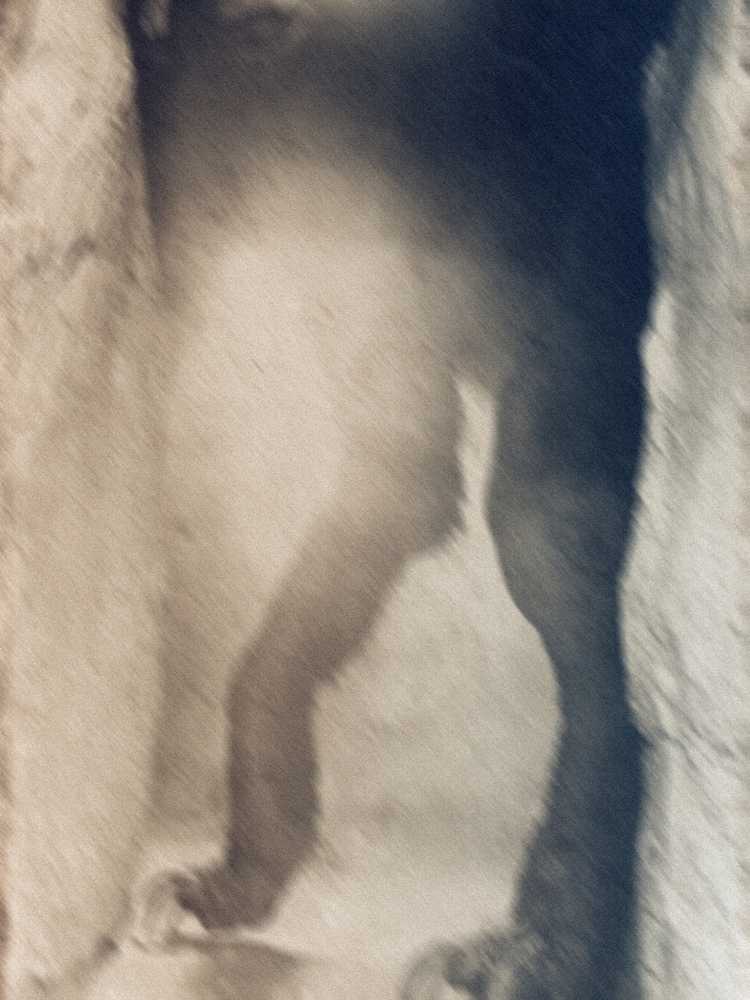
Vaca de las Cavernas · Yucatán · Arte original ·
El Neomylodon
También: Ellengassen (tehuelche), El Animal Patagónico
A finales del siglo XIX, exploradores en las cuevas de la Patagonia chilena descubrieron algo extraordinario: restos de piel, huesos y excremento de un perezoso terrestre (Mylodon darwini) que parecían frescos, sin la mineralización característica de los fósiles. La piel conservaba aún su coloración y sus osteodermos intactos. Esto desencadenó en 1895 una búsqueda internacional coordinada del animal vivo, organizada en parte por el Museo Británico de Historia Natural.
Los tehuelches de la región tenían un nombre para la criatura: "Ellengassen". Sus descripciones coincidían notablemente con la morfología del Mylodon conocido por los fósiles. La hipótesis de supervivencia en los fiordos inexplorados del sur de Chile —uno de los ecosistemas menos accesibles del planeta— fue tomada en serio por zoólogos de la época. Análisis modernos de los restos de piel dataron el material entre 10,000 y 13,000 años de antigüedad, lo que cerró en parte la discusión. Sin embargo, los avistamientos de "algo grande y peludo" en los fiordos australes no han cesado completamente.
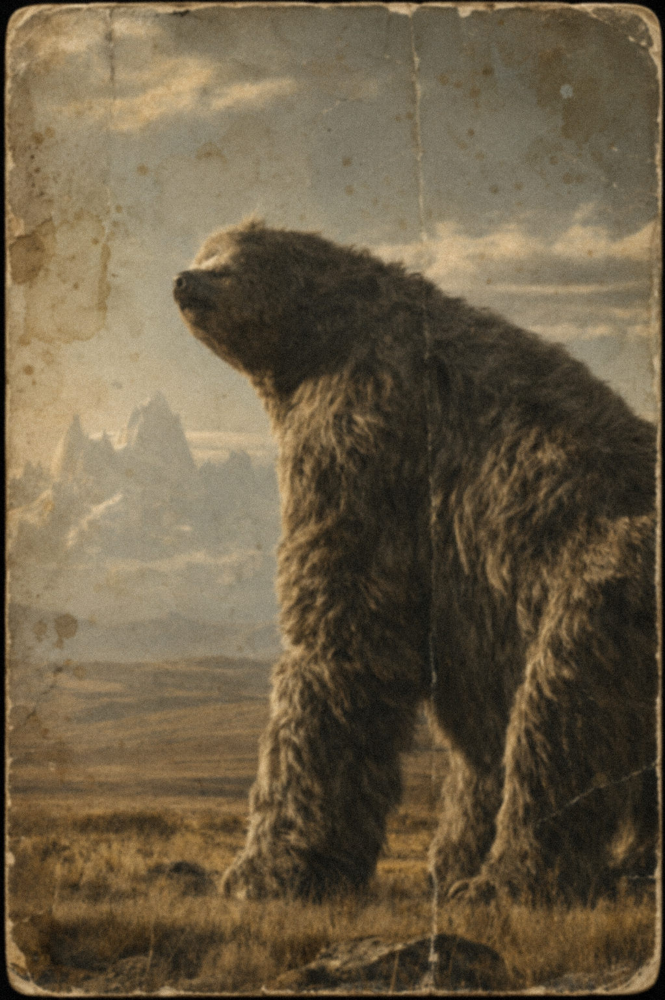
Neomylodon / Mylodon · Patagonia · Arte original ·
El Tigre Dantero / Tigre de Agua
También: Danta-tigre, Danta-toro (Colombia), Yaguareté-pochy
En los Andes de Colombia, Venezuela y Ecuador, los cazadores de zonas remotas describen un gran félido de rayas —diferente al jaguar— con colmillos superiores desproporcionadamente largos que sobresalen de la mandíbula. La variante "Tigre de Agua" se ubica específicamente en los ríos andinos y es descrita como semiacuática, capaz de cazar tapires y danta en el agua. La combinación de rayas y colmillos largos remite de forma directa al Thylacosmilus atrox, un marsupial depredador de colmillos en sable extinto hace aproximadamente 1.5 millones de años, o a felinos de colmillos de sable del género Smilodon.
La supervivencia de un marsupial depredador grande en los Andes es considerada extremadamente improbable por la paleontología moderna, pero los detalles de los testimonios —especialmente la descripción del patrón de rayas, inusual en félidos sudamericanos modernos— no encajan bien con ninguna especie catalogada. Algunos investigadores han propuesto que podría tratarse de yaguarundíes (Puma yagouaroundi) excepcionalmente grandes vistos bajo condiciones de luz desfavorables, pero la consistencia de los relatos sobre los colmillos hace esa explicación insatisfactoria.
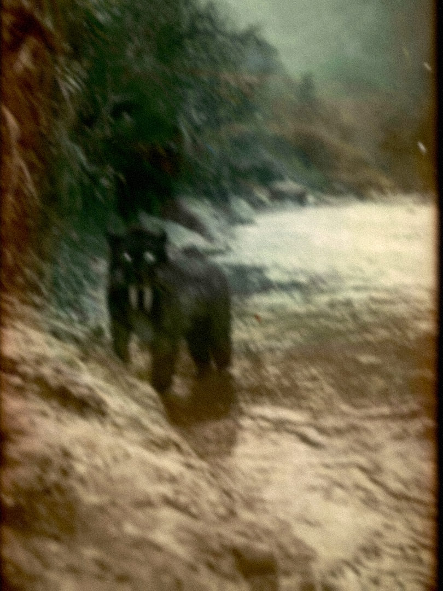
Tigre Dantero · Andes · Arte original ·
El Minhocão
También: Gran Gusano del Sur, El Cavador
Reportado en el sur de Brasil y Paraguay desde el siglo XIX, el Minhocão ("gran gusano" en portugués) es descrito como un animal excavador de dimensiones descomunales —varios metros de longitud, aproximadamente un metro de diámetro— con escamas oscuras, apéndices en la cabeza similares a cuernos y la capacidad de desviar ríos y crear depresiones en el terreno al moverse bajo tierra. El zoólogo Fritz Müller registró testimonios formales del fenómeno en 1877 en la revista The Popular Science Review.
La hipótesis más seria propone un anfibio cecílido gigante (Caeciliidae): las cecilias son anfibios ápodos (sin extremidades) que viven enterrados en el suelo húmedo tropical, y aunque las especies conocidas no superan 1.5 metros, la familia tiene representantes fósiles de mayores dimensiones. Alternativamente, se ha propuesto un pariente gigante de los gliptodontes (Glyptodontidae) de hábitos fossorial, aunque esta hipótesis es menos consistente con la descripción flexible y vermiforme del animal. Las "depresiones" atribuidas al Minhocão en el terreno han sido verificadas en algunos casos pero atribuidas a causas geológicas.
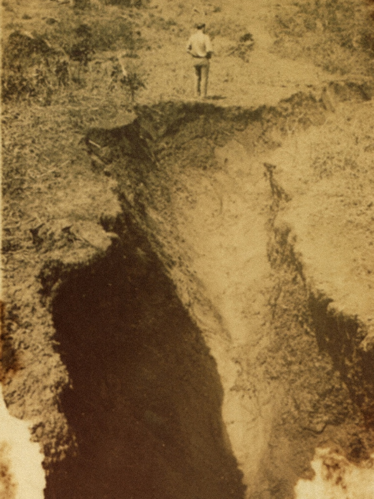
Minhocão · Sur de Brasil · Arte original ·
Criaturas Acuáticas y Lacustres
El océano profundo permanece en gran parte sin explorar. Los lagos glaciares de Patagonia, los ríos amazónicos y los cenotes de Yucatán albergan condiciones que podrían sostener faunas locales desconocidas. Los "monstruos de lago" tienen el corpus más antiguo de la criptozoología: los primeros registros preceden a la era moderna en siglos.
Monstruo del Lago Ness
También: Nessie, An Niseag (gaélico escocés)
El criptido lacustre más famoso del mundo. Los registros de encuentros con una "gran bestia acuosa" en el río Ness se remontan al siglo VI (San Columba, 565 d.C.). La cobertura mediática masiva comienza en 1933 con los avistamientos de los Mackay, seguida de la fotografía de Wilson en 1934 —luego identificada como un fraude con un juguete submarino modificado— que estableció la imagen icónica del cuello emergente.
En 2018, el equipo del Prof. Neil Gemmell (Universidad de Otago) realizó el análisis de ADN ambiental más exhaustivo jamás emprendido en el lago: 259 muestras a distintas profundidades y localizaciones. El resultado: ningún ADN de reptil grande ni de criatura desconocida. Sí se detectó una cantidad inusualmente elevada de ADN de anguila (Anguilla anguilla), lo que sostiene la hipótesis de que los avistamientos corresponden a anguilas gigantes. El debate sobre el tamaño máximo real de la anguila europea —normalmente 1–1.5 m, pero con reportes de especímenes de más de 3 m— no está cerrado en la literatura especializada.
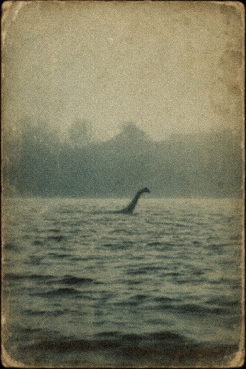
Monstruo del Lago Ness · Escocia · Arte original ·
Nahuelito
También: El Animal del Nahuel Huapi
El Lago Nahuel Huapi, en la Patagonia argentina, es el lago más antiguo del país —formado hace millones de años— y tiene una profundidad máxima de 464 metros. Los avistamientos de una criatura de cuello largo y aletas en sus aguas comienzan en registros coloniales del siglo XVII y se acumulan de forma consistente hasta el presente. A diferencia de otros monstruos lacustres, el Nahuelito ha sido fotografiado en múltiples ocasiones, aunque ninguna imagen ha superado el escrutinio forense definitivo.
La hipótesis "plesiosaurio" —la más popular— es también la menos plausible biológicamente: los plesiosaurios eran reptiles que necesitaban salir a respirar con frecuencia, lo que haría imposible su elusión durante siglos en un lago estudiado. La hipótesis más sólida entre los investigadores serios apunta a un mamífero acuático desconocido adaptado al agua fría andina: quizás un pinnípedo de agua dulce sin clasificar, o un cetáceo primitivo que colonizó el lago en un período de conexión con el océano en el pasado geológico del lago. Ninguna de estas hipótesis tiene respaldo en evidencia física.
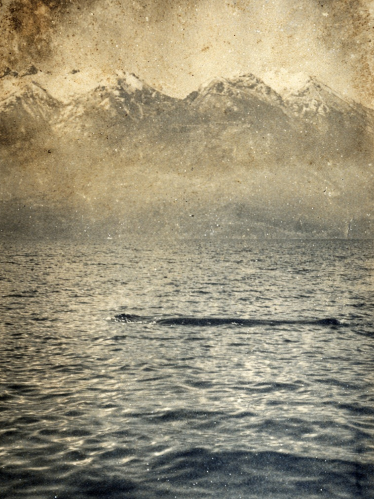
Nahuelito · Patagonia argentina · Arte original ·
El Cuero / Cuero Vivo
También: El Trelquehuecuve (mapuche), La Piel del Lago
En los lagos glaciares de la Patagonia chilena y argentina, la tradición mapuche describe una criatura llamada "Trelquehuecuve" —literalmente "cuero del lago"—: una masa plana, de aspecto membranoso similar a una piel de vaca extendida, con garras o ventosas en los bordes, capaz de rodear a animales y personas que entren al agua y arrastrarlos al fondo. Los avistamientos modernos la describen como un objeto plano, oscuro, de entre 2 y 4 metros de diámetro, que se desplaza justo bajo la superficie.
La hipótesis zoológica más sólida que se ha propuesto para el Cuero es una especie gigante y desconocida de mantarraya de agua dulce. Las rayas de agua dulce (Potamotrygonidae) son propias de América del Sur, donde algunas especies alcanzan diámetros de disco de más de un metro. Una especie de gran tamaño adaptada a los lagos glaciares fríos de la Patagonia, donde las condiciones son radicalmente distintas a los ríos tropicales donde viven sus parientes conocidos, sería una novedad zoológica extraordinaria pero no imposible. No existe ninguna evidencia física del animal.
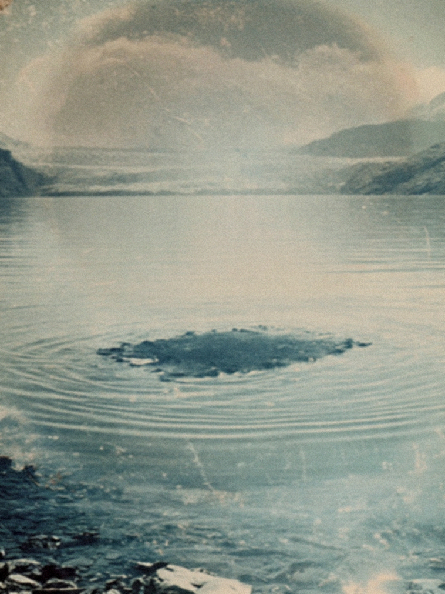
El Cuero / Trelquehuecuve · Patagonia · Arte original ·
La Luhpalili
También: El Perro de Agua, La Nutria Gigante del Coco
En las comunidades miskitas de Honduras y Nicaragua, la "Luhpalili" es descrita como una nutria de dimensiones extraordinarias —entre 1.5 y 2.5 metros de longitud— que habita en los grandes ríos del Caribe centroamericano (río Coco, Patuca, Plátano) y es considerada un depredador feroz capaz de cazar jaguares. La nutria gigante del Amazonas (Pteronura brasiliensis), que puede alcanzar 1.8 metros y sí es conocida como cazadora de caimanes, existe en Sudamérica pero no tiene presencia documentada en Centroamérica.
La zona del río Coco —la frontera natural entre Honduras y Nicaragua— y la Moskitia hondureña son regiones con una de las densidades más bajas de investigación biológica del continente. La hipótesis de una subespecie o especie relacionada con Pteronura brasiliensis con distribución norteña no catalogada no es descabellada, especialmente considerando que el corredor biológico mesoamericano tiene una continuidad histórica con Sudamérica. No existe ninguna muestra física ni fotografía del animal.
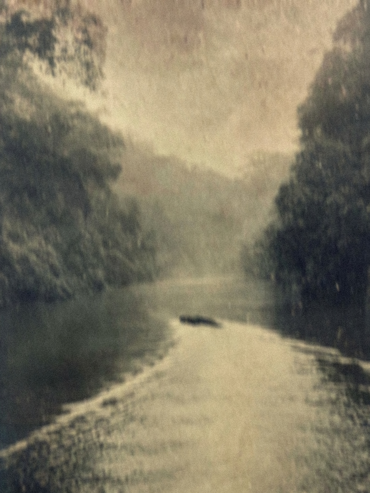
Luhpalili · Honduras / Nicaragua · Arte original ·
Reptiles de Dimensiones Excepcionales
Las serpientes y reptiles gigantes constituyen uno de los territorios más plausibles de la criptozoología: las selvas tropicales americanas aún no han sido cartografiadas biológicamente en su totalidad, y el registro fósil muestra que reptiles de dimensiones enormes existieron en el pasado reciente. La pregunta es hasta dónde llegan los límites actuales.
Sucuriju Gigante
También: Anaconda Gigante, La Madre de las Aguas
Los reportes de anacondas de dimensiones descomunales —que superarían los 10, 15 o incluso 20 metros— provienen de la cuenca del Amazonas desde los primeros relatos europeos del siglo XVI. El explorador Percy Fawcett afirmó en 1907 haber disparado y matado a una anaconda de más de 18 metros en el río Abunã, en Bolivia; su medición fue ridiculizada por la Royal Geographical Society pero nunca pudo ser completamente descartada dada la imposibilidad de verificación retroactiva. La anaconda verde (Eunectes murinus), la serpiente más pesada del mundo, alcanza de forma verificada hasta 6–7 metros y pesos de más de 250 kg.
El Smithsonian Institution ofrece desde 1978 un premio de 50,000 dólares por cualquier espécimen vivo o muerto que supere los 9.14 metros (30 pies). El premio nunca ha sido reclamado. La herpetología moderna no descarta que existan individuos excepcionales de E. murinus en las zonas más remotas y menos perturbadas de la Amazonia occidental que escapen la medición por morir en el bosque inundable sin contacto humano. Un registro de ADN ambiental de 2020 en el río Rupununi (Guyana) mostró la presencia de Eunectes en zonas previamente no documentadas.
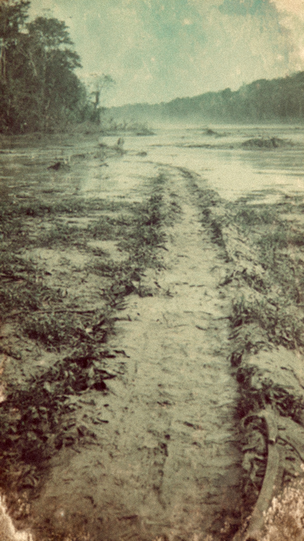
Sucuriju Gigante · Amazonia · Arte original ·
La Serpiente Tsukán
También: La Guardiana de los Cenotes, Chac-Uayab-Xoc
En la tradición oral maya de Yucatán, los cenotes —aberturas en la roca calcárea que conectan con el sistema de ríos subterráneos más grande del mundo— son custodiados por serpientes gigantes llamadas "Tsukán". La descripción es la de una serpiente constrictora de grandes dimensiones, no venenosa, de color oscuro y capaz de desaparecer en las profundidades del sistema acuífero. Los avistamientos modernos en buzos y exploradores de cenotes reportan "formas oscuras de gran longitud" en las zonas profundas no iluminadas.
El sistema de cuevas inundadas de la Riviera Maya (Sistema Sac Actun, Sistema Ox Bel Ha) tiene más de 350 km de túneles cartografiados y una extensión real estimada varias veces mayor. Las condiciones de oscuridad total, agua dulce fría y aislamiento del exterior son teóricamente compatibles con una especie de reptil acuático de gran tamaño que no haya tenido contacto regular con humanos. La boa constrictor (Boa constrictor imperator), presente en Yucatán, no alcanza las dimensiones descritas. Ningún herpetólogo ha documentado formalmente el Tsukán.
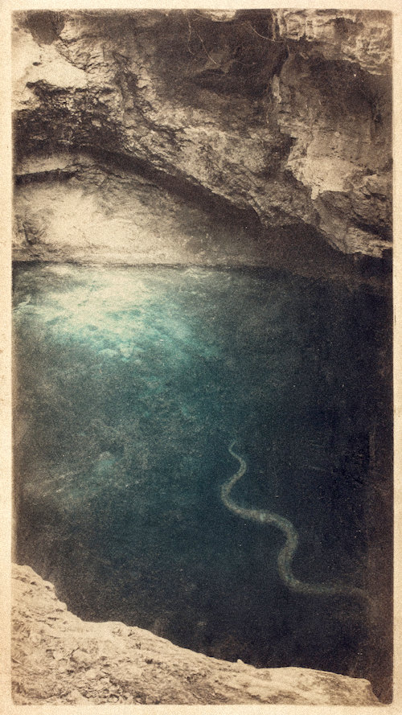
Tsukán · Yucatán · Arte original ·
Yacumama / Sachamama
También: "Madre del Agua", "Madre de la Tierra" (quechua)
En la cosmología indígena amazónica de Perú, Ecuador y Brasil, la "Yacumama" (madre del agua) y la "Sachamama" (madre de la tierra) son las serpientes primordiales que gobiernan los ríos y el bosque. En la criptozoología, los registros de campo de estas entidades —separados de su dimensión espiritual— describen reptiles acuáticos y terrestres de dimensiones prehistóricas: la Yacumama como una criatura serpentiforme de más de 20 metros en los grandes ríos, y la Sachamama como una boa terrestre tan grande que su cuerpo en reposo es confundida por los viajeros con un tronco caído o un terraplén natural.
Los naturalistas del siglo XIX recopilaron sistemáticamente estos testimonios: el naturalista alemán Alexander von Humboldt mencionó relatos sobre serpientes de "tamaño fantástico" en el Orinoco. La interpretación moderna más cautelosa es que podrían corresponder a poblaciones de anacondas gigantes (Eunectes murinus) de talla excepcional en ríos remotos, aunadas a la magnificación cultural que produce el contacto con un animal ya de por sí extraordinario. Sin embargo, la Sachamama terrestre no encaja bien con la anaconda, que es estrictamente semiacuática.
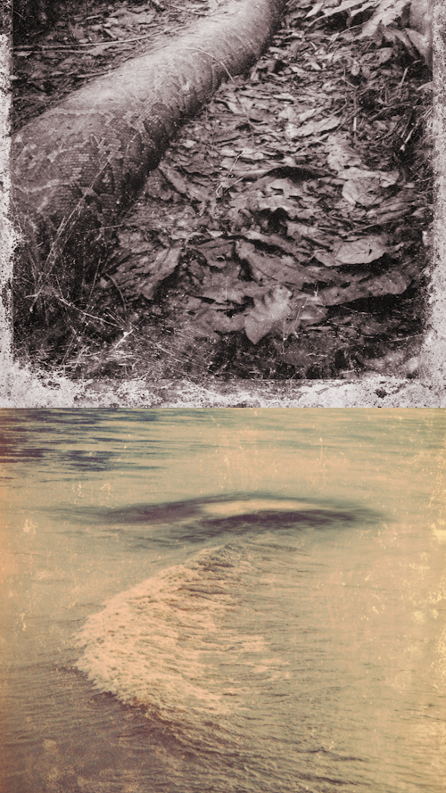
Yacumama · Amazonia · Arte original ·
Megalodon Superviviente
También: Otodus megalodon, El Gran Diente
El Otodus megalodon fue el tiburón más grande que haya existido: hasta 18 metros de longitud y dientes de hasta 18 cm, con fuerzas de mordida superiores a las de cualquier animal conocido. Se extinguió hace aproximadamente 3.6 millones de años. La hipótesis de supervivencia en profundidades oceánicas inexploradas es considerada extremadamente improbable por la biología marina moderna: un animal de ese tamaño requeriría toneladas de biomasa diarias, y los cetáceos —sus presas naturales— no exhiben el comportamiento evasivo que desarrollarían ante un depredador activo de esas dimensiones.
Sin embargo, el caso científicamente honesto exige recordar que menos del 20% del océano profundo ha sido explorado con tecnología moderna. Lo que convierte al Megalodon en un criptido especialmente fascinante es que su existencia histórica es un hecho, no una hipótesis: fue real, fue enorme, y su extinción —aunque muy probable— no fue observada directamente. En el bestiario criptozoológico ocupa un lugar único: es la única entrada cuya existencia pasada es indiscutible para la paleontología.
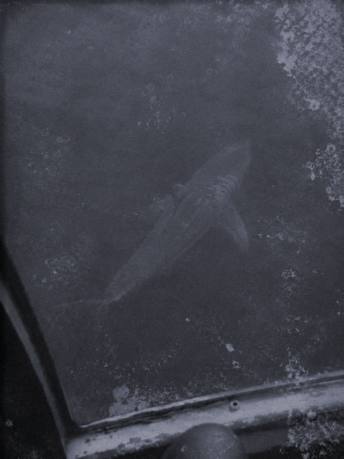
Otodus megalodon · Global · Arte original ·
Aéreos, Globales y Casos Modernos
Criaturas que no encajan en una sola categoría geográfica o taxonómica: un ave de envergadura imposible para los estándares modernos, y el único criptido del siglo XX con un origen mediático documentado y una expansión cultural en tiempo real.
Aves de Envergadura Imposible
También: Thunderbird (Norteamérica), Roc Andino, Gárgolas de Puerto Rico
En los Andes y en Puerto Rico se reportan avistamientos de aves rapaces masivas con envergaduras que superarían los 4–5 metros, muy por encima del cóndor andino (Vultur gryphus, 3.2 m máximo verificado) o el águila arpía (Harpia harpyja). En Puerto Rico, los avistamientos de los años 2000-2010 —popularmente llamados "Gárgolas"— describían aves oscuras, de vuelo silencioso, de tamaño imposible, que en algunos casos supuestamente intentaron levantar mascotas pequeñas.
El registro fósil ofrece una base sólida para la discusión: el Argentavis magnificens, un ave extinta de Argentina, tenía una envergadura de 6–7 metros, la mayor conocida en cualquier ave voladora que haya existido. Se extinguió hace aproximadamente 5 millones de años, aunque su primo más reciente, el Teratornis merriami, vivió en Norteamérica hasta el final del Pleistoceno (~10,000 años). La tradición del "Thunderbird" en culturas indígenas norteamericanas podría ser memoria cultural de avistamientos de Teratornis antes de su extinción. Ningún espécimen moderno ha sido capturado o fotografiado con calidad suficiente.
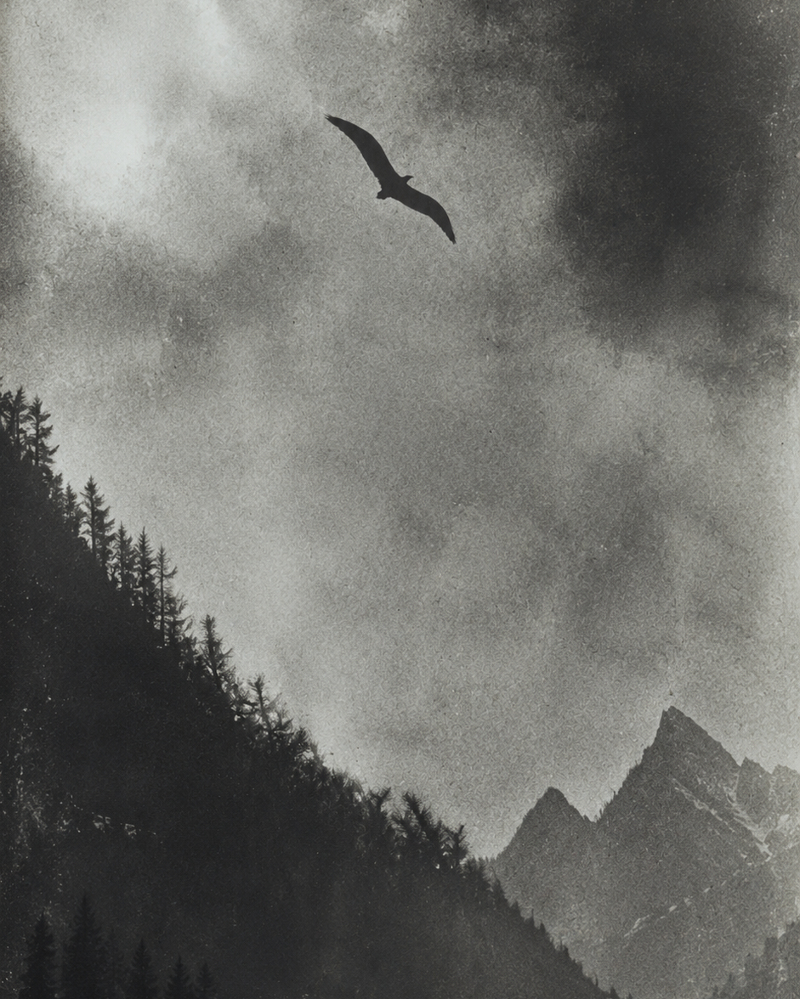
Ave Gigante / Thunderbird · América · Arte original ·
El Chupacabras
También: Goatsucker, La Bestia del Norte, El Vampiro de Moca
El único criptido del siglo XX con un origen mediático documentado con precisión: Puerto Rico, 1995. La investigadora Madelyne Tolentino reportó el primer avistamiento de una criatura bípeda de piel escamosa, ojos rojos, púas en el dorso y supuestamente capaz de drenar la sangre de animales de granja. En semanas, el fenómeno se extendió por toda América Latina. Es también el caso criptozoológico que más se ha acercado a una "resolución" científica, aunque esa resolución es incompleta.
El biólogo Barry O'Connor (Universidad de Michigan) demostró en 2010 que la mayoría de los especímenes físicos presentados como "Chupacabras" eran coyotes, perros o zorros con sarna sarcóptica severa (Sarcoptes scabiei): la caída total de pelo, la piel endurecida y las facciones distorsionadas por el parásito crean un aspecto genuinamente monstruoso. Sin embargo, la versión "original" puertorriqueña —bípeda, escamosa, sin pelo— nunca produjo un espécimen físico y no encaja con la hipótesis de sarna. El origen de esa descripción específica permanece sin resolver. El Chupacabras es el ejemplo más estudiado de cómo un mito criptozoológico puede surgir, mutar y distribuirse en tiempo real.
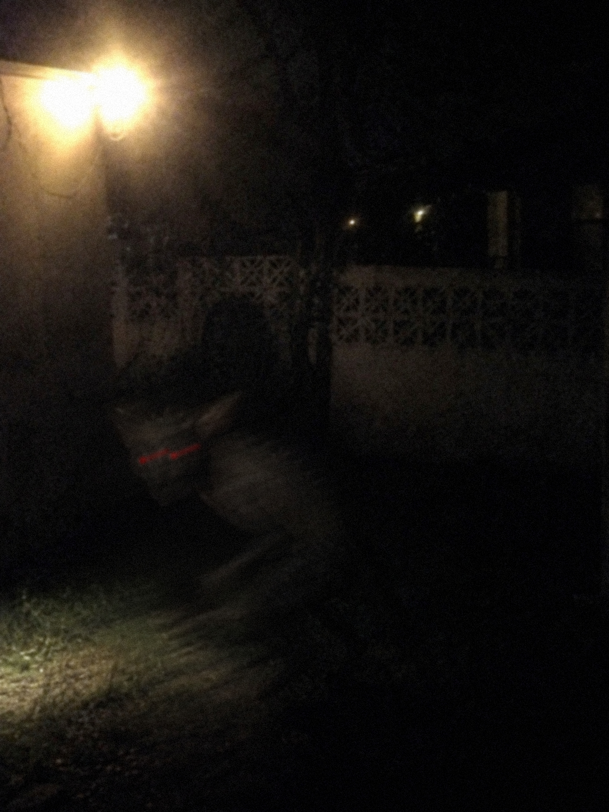
Chupacabras · Puerto Rico / América · Arte original ·
Metodología y Criterios del Bestiario
// Notas sobre este bestiario
- Solo se incluyen animales: criaturas cuya existencia, de ser demostrada, correspondería a una explicación zoológica. Las entidades mitológicas y los seres de cosmología indígena tienen su propio artículo en esta publicación.
- Cada entrada requirió al menos dos fuentes indes: un testimonio o registro histórico verificable, y una referencia biológica, paleontológica o etnozoológica secundaria.
- La inclusión no implica ninguna afirmación sobre la existencia del animal. Este es un catálogo de lo no resuelto, no un compendio de lo probado.
- Las hipótesis biológicas convencionales se presentan en cada entrada donde existen y son razonables. Se señala explícitamente cuando la hipótesis de "fraude" o "error de percepción" es la más respaldada.
- Los imageholders en proporción están reservados para ilustraciones originales. Se recomienda un estilo gráfico consistente: línea de grabado, ilustración científica clásica, paleta restringida.
- Este bestiario es un documento vivo. Nuevas entradas, correcciones y casos con evidencia emergente pueden incorporarse en ediciones futuras.
// Comentarios